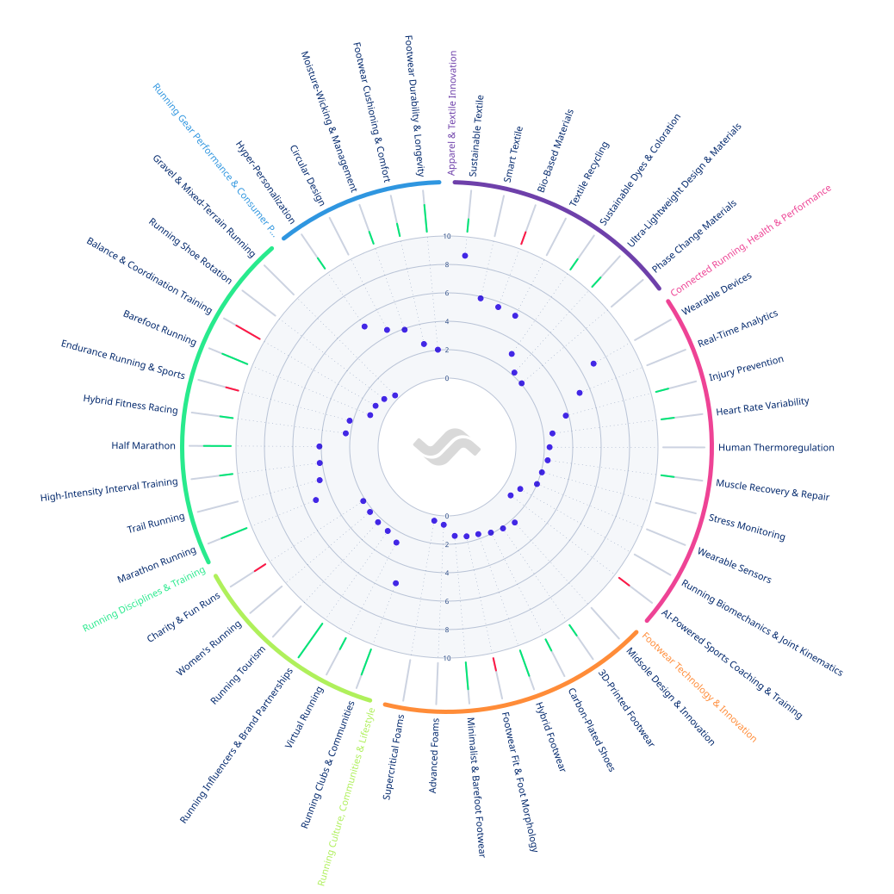

New Balance: Future of Running
New Balance Running, Globally
Share
−
100%
+
Topic size · documents
Link width · Jaccard overlap
Topic
Min. Jaccard
5%
2%
1%
0.5%
0.1%
All links

New Balance: Future of Running
Textile, Fashion & Clothing
Globally
Open live Radar
Enable JavaScript to switch board views and explore topic relationships.